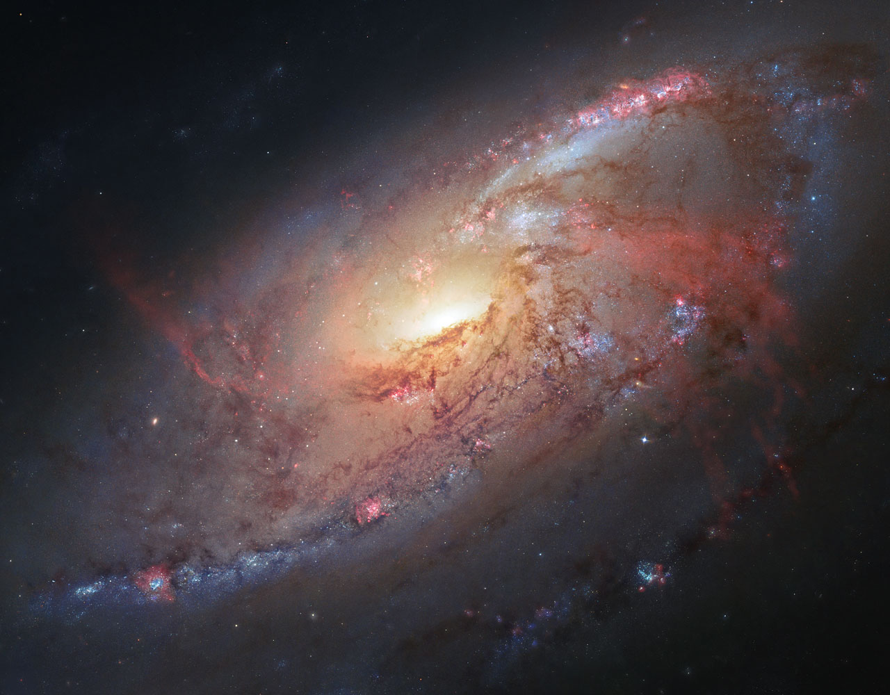

Galaktikos
Aprašymas:
Tai didžiulė, gravitacijos susieta žvaigždžių, tarpžvaigždinių dujų, dulkių bei tamsiosios medžiagos sistema. Visi galaktikoje esantys objektai juda aplink bendrą masės centrą.
Tai didžiulė, gravitacijos susieta žvaigždžių, tarpžvaigždinių dujų, dulkių bei tamsiosios medžiagos sistema. Visi galaktikoje esantys objektai juda aplink bendrą masės centrą.
Daugiau apie galaktikas:
Visos galaktikos, išskyrus mūsų pačių gyvenamą Paukščių Tako galaktiką, yra labai nutolę astronominiai objektai. Atstumas iki artimiausių galaktikų matuojamas megaparsekais. Tolimiausia žinoma galaktika Abell 1835 IR1916 yra už 13,2 milijardų šviesmečių.
Visatoje yra apie 100-130 milijardų galaktikų, o kiekvienoje galaktikoje - nuo 10 milijonų iki trilijono žvaigždžių.
Visos galaktikos, išskyrus mūsų pačių gyvenamą Paukščių Tako galaktiką, yra labai nutolę astronominiai objektai. Atstumas iki artimiausių galaktikų matuojamas megaparsekais. Tolimiausia žinoma galaktika Abell 1835 IR1916 yra už 13,2 milijardų šviesmečių.
Visatoje yra apie 100-130 milijardų galaktikų, o kiekvienoje galaktikoje - nuo 10 milijonų iki trilijono žvaigždžių.
Galaktikų tipai:

Galaktikų tipai pagal Hubble morfologinę klasifikaciją. E – elipsinės galaktikos, S – spiralinės, SB – skersinės spiralinės galaktikos.
Galaktikų spiečiai:
Į didesnes grupes susitelkusios galaktikos, vadinamos spiečiais, kuriems išsisklaidyti neleidžia traukos jėga. Mūsų galaktika, Paukščių Takas, yra antra pagal dydį iš mažiausiai 30 galaktikų, sudarančių spiečių, kuris vadinamas Vietine grupe.
Į didesnes grupes susitelkusios galaktikos, vadinamos spiečiais, kuriems išsisklaidyti neleidžia traukos jėga. Mūsų galaktika, Paukščių Takas, yra antra pagal dydį iš mažiausiai 30 galaktikų, sudarančių spiečių, kuris vadinamas Vietine grupe.
Galaktikų pavyzdžiai:


NGC 2525
Tai skersinė spiralinė galaktika Laivagalio žvaigždyne
Atstumas nuo Žemės: 70 mln. šviesmečių.

Messier 106
Spiralinė galaktika Skalikų žvaigždyne.
Atstumas nuo Žemės: 23 mln. šviesmečių
Andromeda
Tai skersinė spiralinė galaktika Andromedos žvaigždyne ir arčiausia didelė galaktika nuo Žemės.
Atstumas nuo Žemės: 2.5 mln. šviesmečių